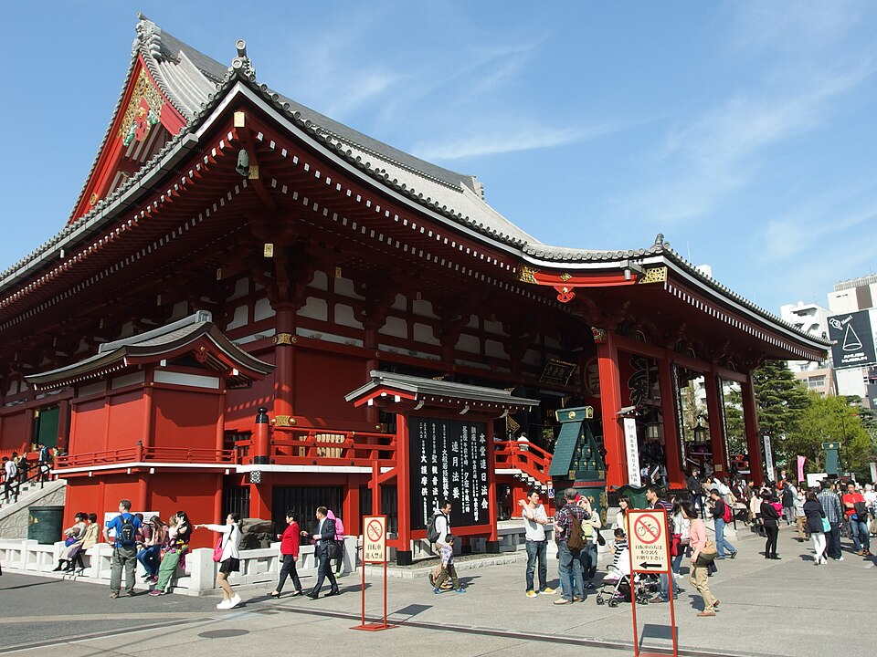
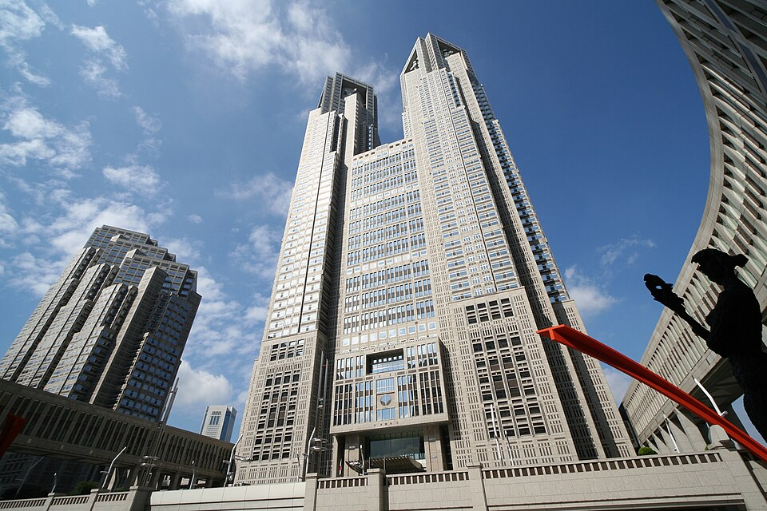
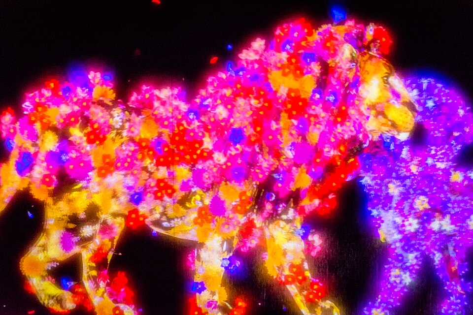
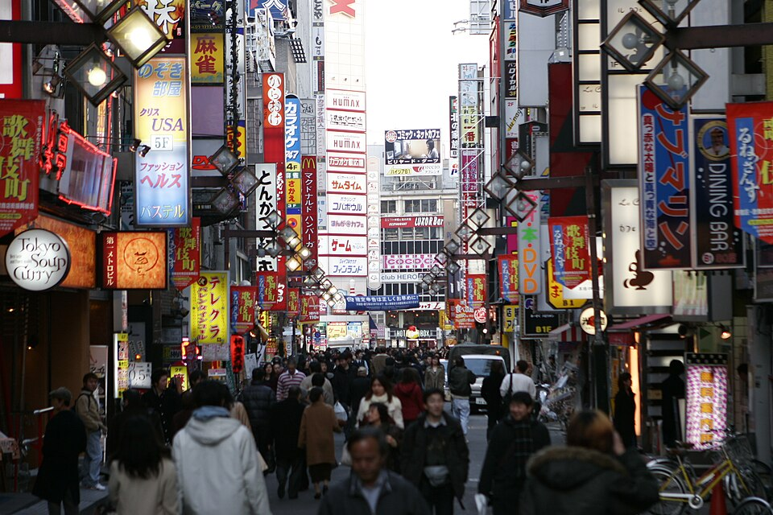
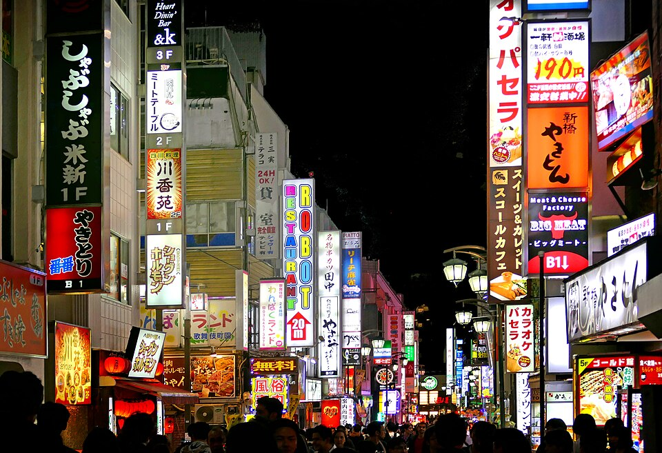
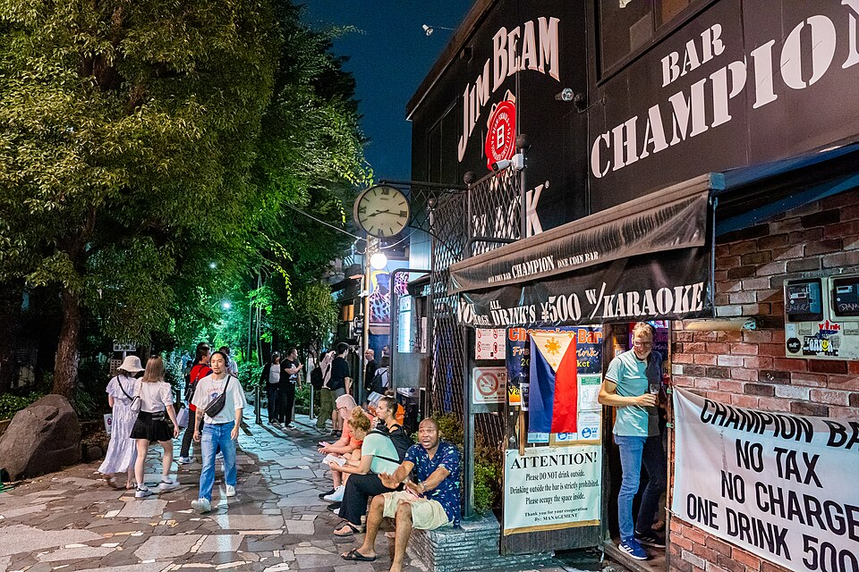

Suica card
For transit
Start with smaller amounts, you can always add more money to the card
How to add the card
01
For transit
Start with smaller amounts, you can always add more money to the card
How to add the card


Book the tickets ahead of time if you want to go



